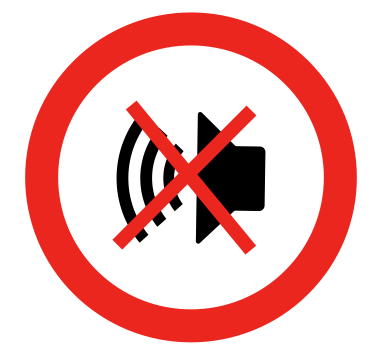

Zum Einstieg
Die zweite Hälfte des Rhythmus.
Im letzten Kapitel hast du gelernt, dass Noten unterschiedlich lange dauern können. Jetzt lernst du die zweite Hälfte des Rhythmus: Pausen.
Eine Pause bedeutet nicht, dass der Puls stoppt. Sie bedeutet lediglich, dass kein Ton erklingt.

Dein Fuß bewegt sich trotzdem weiter.
Du zählst weiter.
Nur das Klatschen setzt aus.
Lernziele
Nach diesem Kapitel kannst du:
- Ganze, halbe, Viertel- und Achtelpausen erkennen.
- Die Dauer jeder Pause erklären.
- Pausen sicher lesen.
- Rhythmen mit Noten und Pausen korrekt ausführen.
- Vollständige 4/4-Takte mit Noten und Pausen schreiben.
Aufbau jeder Lektion
Jede Lektion folgt dem gleichen Ablauf:
- Erklärung
- Körperübung, wenn angebracht
- Mitspiel-MP3, wenn angebracht
- Leseübung
- Höraufgabe
Audiodateien öffnen sich bei Google Drive in einem neuen Tab. Öffne die Lösungen erst, nachdem du selbst geübt hast.
Weiter zu Lektion 1 ↓Lektion 01 / Ganze Pause
Vier Schläge Stille.
1. Erklärung
Eine ganze Pause dauert vier Schläge. Während dieser Zeit wird nicht geklatscht.

2. Körperübung
Dein Fuß tritt auf jeden Schlag. Zähle:
1 – 2 – 3 – 4
Wir klatschen nicht, aber halten dafür die ganze Pause und spüren diese.
3. Leseübung
Rhythmen lesen. Zählen. Nur die Noten klatschen. Fühle die Pausen, indem du sie hältst.
Lösung zur Leseübung anzeigen
4. Höraufgaben
Es wird ein Takt durch das Metronom eingezählt. Dann beginnt die Höraufgabe. Notiere die Noten und Pausen, die du hörst, und kontrolliere dein Ergebnis mit dem Lösungsblatt.
Weiter zu Lektion 2 ↓Lektion 02 / Halbe Pause
Zwei Schläge Stille.
1. Erklärung
Eine halbe Pause dauert zwei Schläge.

2. Körperübung
Stampfe mit dem Fuß wie in den vorigen Kapiteln. Halte nun jeweils zwei Schläge lang eine aktive Pause. Das bedeutet, du konzentrierst dich darauf, jeweils zwei Schläge Stille zu spüren.
Spüre auch, wo die halbe Pause jeweils beginnt: in diesem Fall auf Schlag 1 und auf Schlag 3.
Stampfe: 1, 2, 3, 4. Klatsche nicht. Spüre:
1 2 | 3 4
3. Mitspiel-MP3
Höre dir die MP3 an und erkenne das Muster. Der Takt wird wiederholt. Sobald du das Muster erkannt hast, spiele mit. Wiederhole die Aufgabe so oft wie nötig, um den Rhythmus entspannt mitstampfen und mitklatschen zu können.
4. Leseübung
Rhythmen lesen und klatschen.
Lösung zur Leseübung anzeigen
5. Höraufgaben
Welche Notation hörst du? Schreibe sie auf und kontrolliere dann mit den Lösungsblättern.
Höraufgabe 3
Lösung 3 anzeigen
Lektion 03 / Viertelpause
Ein Schlag Stille.
1. Erklärung
Eine Viertelpause dauert einen Schlag. Der Puls läuft weiter.

2. Mitspiel-MP3
Höre dir die MP3-Dateien an und erkenne das Muster. Der Takt wird wiederholt. Sobald du das Muster erkannt hast, spiele mit. Wiederhole die Aufgabe so oft wie nötig, um den Rhythmus entspannt mitstampfen und mitklatschen zu können.
3. Leseübung
Rhythmen lesen. Klatschen.
Leseübung 1
Lösung zur Leseübung 1 anzeigen
Leseübung 2 · Versteckter Songrhythmus · LDDLM
Lösung zur Leseübung 2 anzeigen
4. Höraufgaben
Notiere, was du hörst. Verdecke die Lösung, bis du sie brauchst.
Höraufgabe 3
Lösung 3 anzeigen
Lektion 04 / Achtelpause
Ein halber Schlag Stille.
1. Erklärung
Eine Achtelpause dauert einen halben Schlag. Wir zählen:
1 & 2 & 3 & 4 &

2. Körperübung
Dein Fuß bewegt sich abwechselnd nach unten und oben. Zähle dabei 1 & 2 & 3 & 4 &.
Halte die Pausen mit geschlossenen Händen und spüre sie. Du kannst sie auch durch Schwingen der Hände markieren. Achte darauf, dich auf den „&“-Zählzeiten nach oben zu bewegen.
3. Leseübungen
Rhythmen lesen und klatschen. Lege nun besonderen Wert darauf, die Pausen aktiv zu spüren.
Leseübung 1
Lösung zur Leseübung 1 anzeigen
Leseübung 2
Lösung zur Leseübung 2 anzeigen
Leseübung 3
Lösung zur Leseübung 3 anzeigen
Leseübung 4
Diese Übung ist in der Vorlage noch nicht ausgefüllt. Fahre mit Leseübung 5 fort.
Leseübung 5
Lösung zur Leseübung 5 anzeigen
Leseübung 6 · Nirvana – CAYR
Lösung zur Leseübung 6 anzeigen
Leseübung 7 · Bob Marley – CYBL
Lösung zur Leseübung 7 anzeigen
4. Höraufgaben
Welche Notation hörst du? Schreibe sie auf.
Weiter zu Lektion 5 ↓Lektion 05 / Gemischte Rhythmen mit Pausen
Klang und Stille verbinden.
Jetzt kombinieren wir:
Aufgabe 1 · Pausenlängen zuordnen
Diese Übung ist dazu da, dir die Notenwerte noch einmal bewusst zu machen. In den meisten Fällen würden wir beispielsweise eine ganze Pause nicht durch vier Viertelpausen ersetzen. Jetzt wollen wir allerdings testen, ob du weißt, welche Pause wie lang ist.
Wir sind im 4/4-Takt!
1. Wie viele Viertelpausen sind so lang wie eine ganze Pause?
Kontrolle anzeigen
4 Viertelpausen. 4 Schläge ÷ 1 = 4.
2. Wie viele Achtelpausen sind so lang wie zwei Viertelpausen?
Kontrolle anzeigen
4 Achtelpausen. 2 Schläge ÷ ½ = 4.
3. Wie viele Achtelpausen sind so lang wie drei Viertelpausen?
Kontrolle anzeigen
6 Achtelpausen. 3 Schläge ÷ ½ = 6.
4. Wie viele Achtelpausen sind so lang wie eine halbe Pause?
Kontrolle anzeigen
4 Achtelpausen. 2 Schläge ÷ ½ = 4.
5. Wie viele Viertelpausen sind so lang wie eine halbe Pause?
Kontrolle anzeigen
2 Viertelpausen. 2 Schläge ÷ 1 = 2.
Abschlussaufgabe 2 · Takte vervollständigen
Jetzt verwendest du Noten und Pausen gemeinsam. Jeder Takt muss genau vier Schläge enthalten.
Aufgabe 2.1
Aufgabe 2.2
Aufgabe 2.3
Aufgabe 3 · Finde den Fehler im Takt
Ergänze fehlende Noten oder Pausen. Mehrere Lösungen sind oft möglich.
Aufgabe 3.1
Lösung 3.1 anzeigen
Die Noten in diesem Takt ergeben einen 5/4-Takt. Es ist ein Schlag zu viel!
Aufgabe 3.2
Lösung 3.2 anzeigen
Statt der Viertelpause ist in der MP3 eine halbe Pause ab Schlag 2 zu hören.
Aufgabe 3.3
Lösung 3.3 anzeigen
In der MP3 sind nur drei Achtelnoten zu hören. Daher muss auf der Zählzeit 4& eine Achtelpause sein.
Aufgabe 4 · Eigene Takte schreiben
Schreibe vollständige 4/4-Takte. Nutze verschiedene Kombinationen.
Aufgabe 5 · Spiele deine Rhythmen
- Stampfe den Puls.
- Zähle laut.
- Klatsche nur die Noten.
- Halte jede Pause exakt ein.
- Spiele die Rhythmen anschließend auf deinem Instrument.
Zum Abschluss
Kapitelziel erreicht.
Du kannst jetzt:
Damit beherrschst du alle grundlegenden Rhythmussymbole des 4/4-Takts und bist bereit für komplexere Rhythmen.
Ende von Kapitel 3
Auch die Stille hat ihren Platz.
Dein Fuß trägt den Puls – durch Noten und durch Pausen.
Zum Kursüberblick Noch einmal üben ↑← Zurück zu Kapitel 2